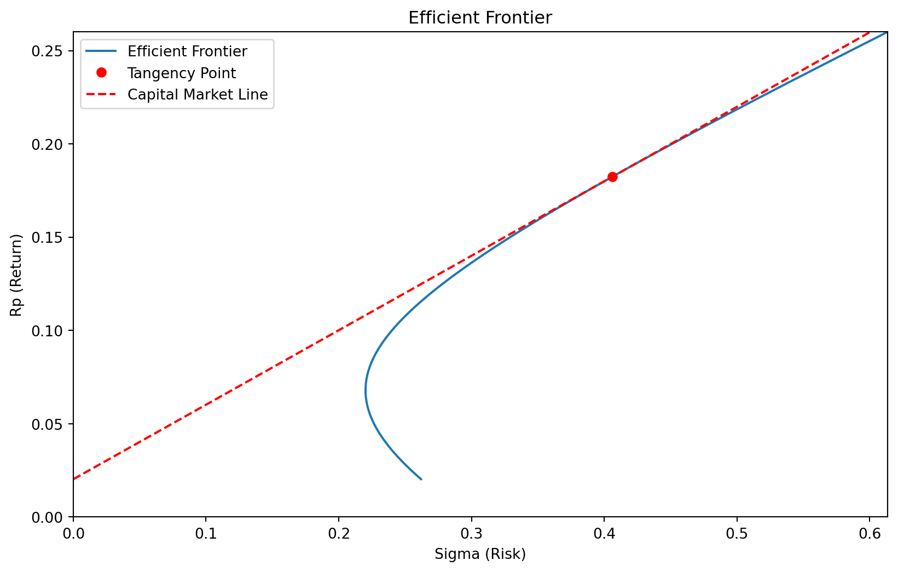
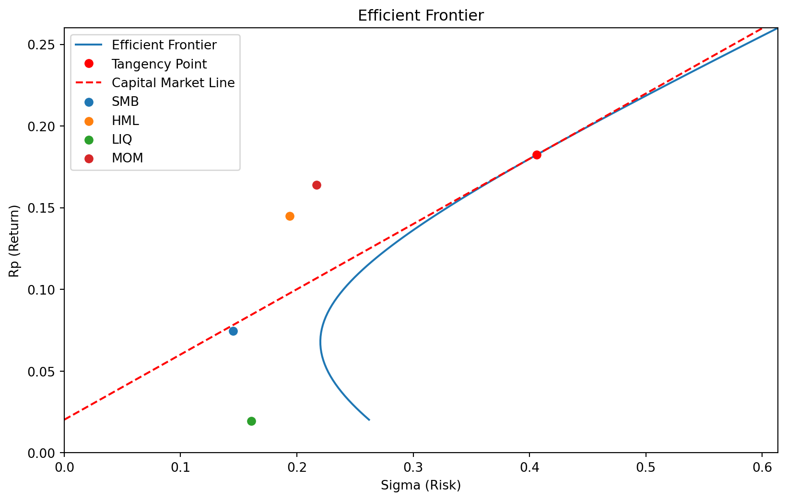

import pandas as pd
#Query script for MySQL client
import pymysql
con = pymysql.connect(host='titlon.uit.no',
user = "user@account.com",
password = "%VccvGWz5UjtT9sAuU7og",
database='OSE')
crsr=con.cursor()
crsr.execute("SET SESSION MAX_EXECUTION_TIME=60000;")
crsr.execute("""
SELECT *
FROM `OSE`.`factors`
WHERE year(`Date`) >= 2016
ORDER BY `Date`
""")
r=crsr.fetchall()
df=pd.DataFrame(list(r),
columns=[i[0] for i in crsr.description])
df
#YOU NEED TO BE CONNECTED TO YOUR INSTITUTION VIA VPN,
# OR BE AT THE INSTITUTION, FOR THIS CODE TO WORK
pd.to_pickle(df,'output/factors.df')4 - Factors
Factors are portfolios constructed based on specific characteristics of assets. For example, Fama and French proposed factors based on company valuation (over- or under-valuation) and company size.
Construction of Factors
A standard, simplified method for constructing a factor portfolio involves creating a long position in the third of assets with the strongest characteristic (e.g., the most undervalued) and a short position in the third with the weakest. For instance, the HML (High Minus Low) factor by Fama and French takes a long position in the top third of companies with the highest market-to-book value and shorts the bottom third with the lowest.
This results in a portfolio with zero net cost because the long and short positions offset each other. Hence, there’s no need to subtract the risk-free rate when calculating returns for factor portfolios.
In Titlon, there are four factors: SMB, HML, LIQ, and MOM, alongside the market factor (the market index).
- SMB (Small Minus Big): The return of small companies minus the return of large companies.
- HML (High Minus Low): The return of companies with high market-to-book ratios compared to those with low ratios.
- LIQ (Liquidity): The return of the most liquid companies minus that of the least liquid.
- MOM (Momentum): The return of companies with high momentum minus those with high reversal tendencies.
Factor Model
The main purpose of factors is to be used in regression analysis, like the following:
\[ \begin{array}{rl} x - r_f = \alpha + \beta_M (r_M - r_f) \\ +\beta_{SMB} \cdot SMB \\ +\beta_{HML} \cdot HML +\beta_{LIQ} \cdot LIQ \\ +\beta_{MOM} \cdot MOM + \epsilon \end{array} \]
This is a multifactor model. If we only include the market factor, the model reduces to the well-known CAPM (Capital Asset Pricing Model). Adding the additional factors results in a more comprehensive factor model.
Factors in Portfolio Evaluation
Numerous factors have been proposed in the literature. However, many are believed to be the result of data mining, so it’s common practice to use only the most established ones, like those mentioned above, when evaluating portfolio performance.
The estimated \(\alpha\) from the factor model is the most widely recognized measure of risk-adjusted return. A positive \(\alpha\) indicates that a portion of the excess return of \(x - r_f\) cannot be explained by exposure to any of the factors, including the market factor. This implies that the portfolio has delivered some form of risk-free excess return.
As in any regression, you can compute the standard error and p-value of the estimated \(\alpha\). This is crucial because, if the \(\alpha\) is not statistically significant, we cannot confidently conclude that it is different from zero. Therefore, to claim that an asset or portfolio has truly outperformed the market, its multifactor \(\alpha\) should be both positive and statistically significant.
Historical Context
This framework is the standard method for determining whether a portfolio manager has genuinely been skilled or simply benefited from luck or factor exposures.
The field of finance has, in many ways, been driven by the need to explain portfolio managers’ overperformance. In the early 20th century, some managers appeared to consistently outperform the market. The development of CAPM revealed that this was often due to selecting stocks with high market risk rather than genuine skill. Most of these managers did not generate CAPM alpha.
For investors seeking higher returns by taking on more market risk, simply buying more shares (increasing exposure to the market) is typically more cost-effective than picking the riskiest stocks. The development of CAPM helped investors make more informed choices.
Similarly, the introduction of factor models showed that some managers were merely betting on small-cap stocks or undervalued companies to generate excess returns. When accounting for these factors, much of the supposed excess return often disappears.
Coding Challenges:
Challenge 1: - Download stock data from Titlon for a single stock. - Perform a multifactor regression model using the downloaded data. - Analyze the significance of the alpha: check whether it is statistically significant, and interpret its direction (positive or negative). - Provide commentary on what the result implies in terms of the stock’s performance relative to the factors.
Challenge 2: - Download factor data from Titlon and plot the performance of these factors alongside the optimal portfolio from the previous chapter. - Add each factor as a data point on the chart, allowing comparison between the factors and the optimal portfolio as well as the portfolio frontier. - Use the following SQL query in the Titlon script to retrieve the factor data:
sql SELECT [SMB],[HML],[LIQ],[MOM] FROM [OSE].[dbo].[factors] WHERE YEAR([Date]) >= 2016- Plot the performance and visually assess how each factor performs relative to the optimal portfolio.
Tentative answer to Challenge 2:
We first download the factor data from titlon
First, let us just rerun the last few cells of the previous chapter, in order to have the previous graph in the memory. That can is done with a custom function calc_notebook in the module functions,pyin this directory. d contains the variable from those calculations.
import functions
d = functions.calc_notebook("3-lecture_optport.ipynb",
["read_pickle","get_matrix", "cov_matrix", "A =",
"portfolio_front", "ax.plot"])
locals().update(d)
We then calculated the means and standard errors, after reducing the frequency from daily to weekly.
import pandas as pd
df = pd.read_pickle('output/factors.df')
df['Date'] = pd.to_datetime(df['Date'])
df = df.set_index('Date')
df_weekly = df.resample('W').sum()
df_weekly = df_weekly[['SMB', 'HML', 'LIQ', 'MOM']].dropna()
df = df[['SMB', 'HML', 'LIQ', 'MOM']].dropna()
means = df_weekly.mean()*52
std = df_weekly.std()*52**0.5
print(std)
print(means)
df_weeklySMB 0.145195
HML 0.193652
LIQ 0.160615
MOM 0.216708
dtype: float64
SMB 0.074676
HML 0.145056
LIQ 0.019353
MOM 0.164041
dtype: float64| SMB | HML | LIQ | MOM | |
|---|---|---|---|---|
| Date | ||||
| 2016-01-10 | 0.040139 | -0.038205 | 0.063480 | 0.039485 |
| 2016-01-17 | -0.004794 | -0.053537 | 0.045607 | 0.013392 |
| 2016-01-24 | 0.016701 | 0.025072 | -0.004320 | -0.014409 |
| 2016-01-31 | 0.002747 | -0.001928 | -0.016214 | -0.024070 |
| 2016-02-07 | -0.008014 | -0.029920 | -0.002909 | -0.008874 |
| ... | ... | ... | ... | ... |
| 2024-03-10 | 0.032518 | 0.037676 | 0.017710 | -0.005075 |
| 2024-03-17 | 0.014078 | 0.007018 | -0.025601 | 0.023273 |
| 2024-03-24 | 0.013395 | -0.008679 | -0.003795 | 0.036296 |
| 2024-03-31 | 0.000000 | 0.000000 | 0.000000 | 0.000000 |
| 2024-04-07 | 0.000000 | 0.000000 | 0.000000 | 0.000000 |
431 rows × 4 columns
We can then plot the factors in the existing porfolio frontier
for series in means.index:
ax.scatter(std[series], means[series], label=series)
ax.legend()
fig
Can you construct the optimal portfolio of the stocks and the factors?